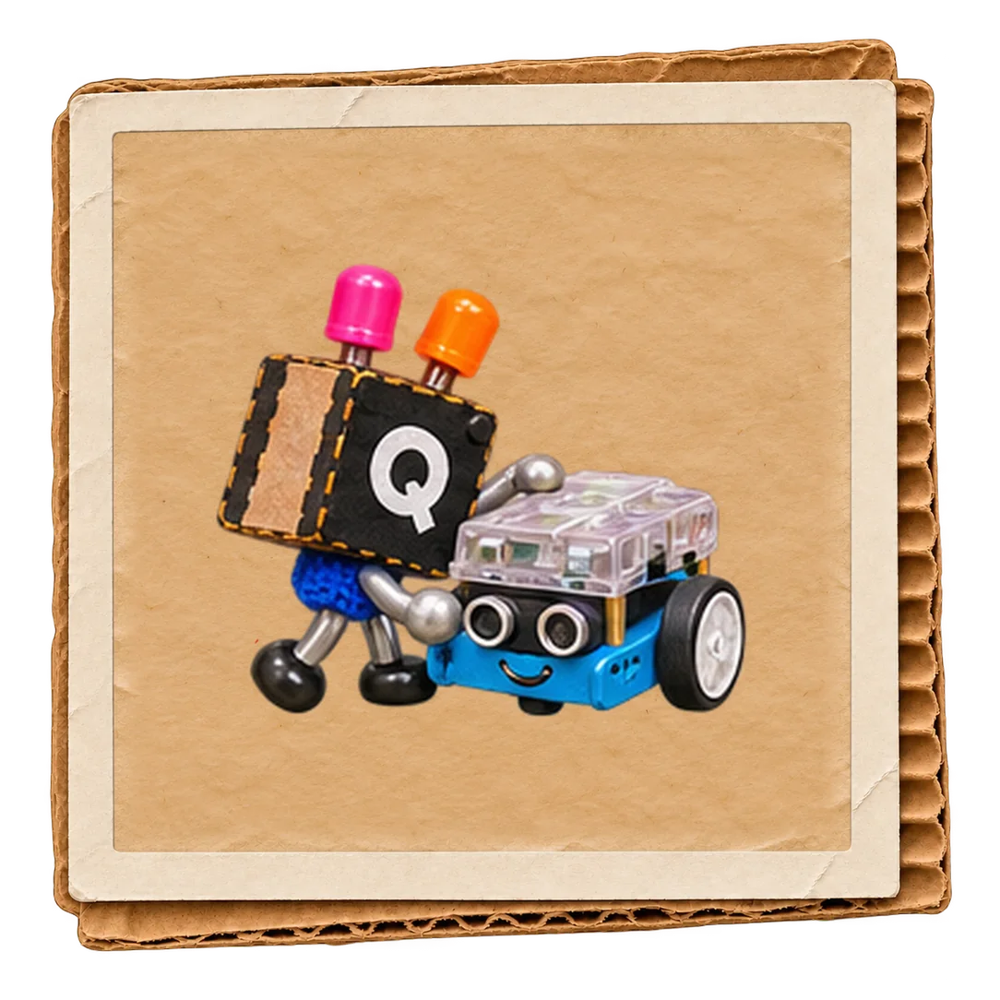

the laba working studio


A LAB IN MARRICKVILLE
Qwerty Labs is an independent creative technology studio in Marrickville, Sydney. We've been making things with young people since 2016.
These days there's room for grown-up makers too.


Making gives learning a reason
What do you want to make? We ask that a lot. The answer might be a game, a gadget or something you haven't quite worked out yet.
Beginners often start with a small guided project. Once they've got a few techniques under their belt, we can help them do something of their own.
If a game needs to keep score, there's a good reason to learn about variables. If a robot needs to stop before it hits the wall, it's time to investigate sensors. Sometimes the most useful thing to learn next has nothing to do with code.
We teach in small groups, with around one tutor for seven young makers. We check in regularly, demonstrate techniques and help people investigate problems. As they become more experienced, they make more of the decisions. We don't expect everybody in a class to be making the same thing.
And sometimes the best solution is not to build anything at all.
Have a look at what we make and the tools we use.
Look what happened
Two of our teenagers, Zach and Chloe, noticed that younger children were having trouble understanding where their code went after they'd written it. So they made a cloud.
Their cloud uses a Raspberry Pi, lights, buttons and sounds to show how code travels between a website, a computer and a device. It even demonstrates what happens when things go wrong.
In 2026, Project Code Cloud was the only Australian project among the international VIP judges' favourites at the Raspberry Pi Foundation's Coolest Projects showcase. The Prime Minister's office wrote to congratulate them.
What we love most about this project is that they made it for the younger kids.
Makers teach
Our tutors write code and make things with technology too. When something doesn't work, it helps to have somebody nearby who's spent a fair bit of time tracking down bugs of their own.
Dannielle Chun (DC)
Founder & Lead Educator
DC develops the Lab's programmes and teaches in the studio. She brings more than two decades of professional digital production to the Lab.
DC's fascination with technology began at nine when she discovered Merlin the Electronic Wizard, one of the earliest handheld electronic games.
In 1997, she made her first hyperlink. It went to NASA. Of course it did.
DC began her professional career as a web developer at the multi-award-winning ABC Science Online, working at the intersection of science, technology and creative experimentation.
She developed websites for Dr Karl and the Surfing Scientist, moderated the online forum where the word ‘selfie’ first appeared, coded the ABC's earliest podcasts and videos, and later designed the user experience for Radio National's podcast library.
At Microsoft Australia, she led digital strategy across its developer, IT professional and education channels, creating applications that were subsequently adopted by Microsoft teams around the world.
In 2016, drawing on her experience at the ABC and Microsoft, DC set out to create something rather different: a version of the original ABC Lab for children.
A place to experiment with technology, follow interesting ideas and make things that didn't exist yesterday.
Around 1,500 young people have made things here since. Some came for a day. Others keep coming back for years.
Ten years later, QwertyKids has become Qwerty Labs.
The idea turned out to be just as relevant to adults.
Qualifications
- Teaching Certificate, Cambridge University
- Bachelor of Media, Macquarie University
- Education and Care First Aid, St John
- NSW Working with Children Check


Mail from space
At ABC Science Online, Dannielle built the National Science Week website. One year, she received a letter addressed to her from the International Space Station.
Inside was a video from the astronauts wishing Australia a happy National Science Week.
She kept the video. Not the envelope. Naturally.
Growing up at the Lab
Some of our young makers start at seven and keep coming well into their teens. We get to see their interests change, their projects get more ambitious and the lovely moment they realise they know enough to help somebody else.
There's usually something interesting happening upstairs. Somebody's making a game, somebody else is trying to work out why their circuit isn't behaving. There's probably a bit of cardboard involved.
There's a lot of laughing and mucking around too. One of the best bits is when someone shows us what they've made and we all get to have a go. We play their games, try their inventions and still squeal when the stuff we make does things.
Zach joined us at nine. At thirteen he wrote about what it's like to be a student here. He reckons we're funny. Well, most of the time.
We take the projects seriously. Ourselves, less so.

Making responsibly
When we make something for somebody else to use, there are a few more things to think about. Can they use it if they can't see the screen? What happens to the information they give us? What if they use it in a way we didn't anticipate?
These are questions worth asking while we're designing something, not after we've built it. They're also the sort of questions we'll explore with adults in our Make It Well workshops.
Parents entrust us with their children, and we take that responsibility seriously. We follow NSW Working With Children Check requirements for people working with children. Parents are welcome to ask about verification details.
Come and make something
You'll find us upstairs in Marrickville, in Sydney's Inner West. We run weekly classes and holiday camps for kids aged 7–12 and teens aged 13–17. For adults, we're developing one-to-one mentoring and group workshops, online and at the Lab.
Not sure where to start? Get in touch and tell us a little about what you're interested in making.
Level 1, 230 Marrickville Road, Marrickville NSW 2204.

Get making

Explore